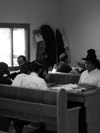

When You Really Want It

Yoram D. was a soldier in the Tzivos Hashem club in Beit Shaan 26 years ago. He kept in touch with the Chabad house even when he outgrew the club and was drafted into the army. He eventually was appointed to fill a position of importance and great responsibility. Today, Yoram is responsible for the nationwide network tasked with enlisting suitable soldiers for special intelligence missions, including men from the religious sector.
Yoram called me and asked me for the number of Rabbi Yitzchok Isaac Landau of the Chabad yeshiva in Tzfas. He told me about a Lubavitcher who had recently enlisted for these kinds of missions. The fellow had begun his service but had a little problem. Where he served, somewhere in the south, there is no mikva and the man was unwilling to begin any activity (including davening and/or eating) without immersing every morning. The commanders discovered that his personal rabbi was Rabbi Landau, and now Yoram wanted to speak with Rabbi Landau. Maybe he would be willing to explain to this fellow that he could manage a few days without a mikva.
Several hours later, Yoram reported to me that Rabbi Landau had said he would speak to the man. A few days after that, I met Yoram and asked him what happened with the Chassid-soldier. Yoram said they ended up finding a spring of water in the vicinity of the army camp and the man immersed there every morning. I was happy it had worked out.
THE SAME STORY FROM ANOTHER PERSPECTIVE
We had a guest for Shabbos – my married son who lives in Tzfas. At the Shabbos table, he said something interesting that he had heard at a farbrengen from his friend, Mendy Gruzman. Mendy had recently been drafted into the army (he had no choice; the situation warranted it).
Mendy said that he had been told this was a special, personalized draft in which the needs of every soldier are taken into account. The army would supply him with all his religious needs in the best possible way (which is not done for those inducted into “regular” army service). They had food with the right hashgacha, times for davening and learning, and absolute separation between men and women. All was well until Mendy realized there was no mikva. There were dozens of religious soldiers and all were satisfied. It was only Mendy who refused to join any activity until he would be able to immerse in a mikva.
Some of the highest ranked commanders got involved in Mendy’s “issue.” They were somewhat stressed over the fact that he would not eat or daven until he had a mikva. One of them explained to him that if he did not participate, they would have to remove him from this special division and he would end up in the regular army without special consideration for his religious needs. Mendy politely but firmly insisted that he could not participate without first immersing in a mikva.
It seemed to become a contest of wills, and there could only be one winner. The dozens of religious soldiers were curious about how the story would end. Then one of the commanders discovered a pool near the camp. But it was surrounded by fences and locked gates, so that possibility petered out. As a last resort, the commanders suggested that Mendy consult with his rabbi and explain that under the circumstances, he could not immerse in a mikva. Could he make do with a shower (tisha kabin) instead of a mikva?
Mendy wrote to the Rebbe and opened to a letter in the Igros Kodesh which said not to be fazed and not to be downcast because of what had happened lately, since with Hashem’s help the situation would improve.
One of the commanders spoke with Rabbi Landau who asked to speak to the bachur. He explained that it was possible the army would not find a solution and he would be transferred, but Mendy was confident that the army would make every effort so that he could immerse each morning.
This went on for another full day, and then another, until the commanders took another look at the maps and at aerial photographs of the area they were in and discovered a small spring a few kilometers from the camp. It was arranged that every morning, a military jeep would come and take Mendy to the spring so he could start his day by immersing.
Now that I heard the same sort of story from another perspective, I was even happier. I saw that it was thanks to standing strong that all-out efforts were made and a solution was found. I called Yoram and got his permission to write his story though not before he made sure to mention that the army is under no obligation to provide a mikva for every soldier in every army camp.
YOUTHFUL DETERMINATION
In Eilat there is a Chabad yeshiva which, some time ago, experienced a diminished enrollment. Efforts were made to recruit new students. For this purpose, a number of bachurim from the yeshiva in Tzfas who had finished their year on K’vutza went to Eilat.
I attended a farbrengen on Hei Teves in this yeshiva and the following are a few stories showing the determination of a number of these young shluchim:
In order to reach a large number of youth, you need to go where they hang out. In the evening, the bachurim from the yeshiva go to the area where the clubs are. With special permission from their mashpiim, they wait outside and go over to every young man that exits the club and engage him in conversation. They ask for phone numbers in order to invite them to events at the yeshiva.
Before every event phones begin to ring and the guys show up to a farbrengen where they hear about the Rebbe and Chassidus, about Gemara and fulfilling mitzvos. Many of them register to learn in the yeshiva. With my very own eyes, I saw dozens of bachurim, the invitees and those who invited them, sitting side by side and participating enthusiastically in the discussion and niggunim.
MANAGER OF THE CLUB AS WELL AS A SHUL
Levi Lifsh, shliach at the yeshiva in Eilat, related:
Yaniv is a young fellow who manages a very large nightclub in Eilat. Twice a week, the evening ends with about 150,000 shekels (over $40,000) in the register.
Yaniv sleeps about four hours a night and he is really a “chassid.” There is a shul that he runs. He donates a lot of tz’daka to fund the shul’s activities and other good things that we don’t yet know about.
Today I went to help Yaniv complete a minyan for Mincha-Maariv and to give a shiur. The shiur began with these words of wisdom from Yaniv:
Question – you earned $100 and donated maaser. How much do you have left?
$90.
No. You have $10.
Why?
Because $90 goes to waste on silly things and the maaser remains with you forever.
TRUE GIVING
Rabbi Shimshon Tal, shliach in Hod HaSharon, relates:
“Several years ago, an insurance agent who davens at the Chabad house wanted to donate several thousand shekels towards renovating the Chabad house. We needed to replace some of the furniture and do some painting, and it added up to about 40,000 shekel. The insurance agent said he would donate half that amount and so we made some of the renovations.
“A few weeks after the work was completed, I got a call in the middle of the night, telling me there was a fire at the Chabad house. I rushed over and when the firemen had finished their work, I assessed the damage. Furniture had been burned, the walls were blackened, and the firemen had doused the place with water, causing a lot of damage to s’farim and property.
“The insurance agent showed up bright and early and asked, ‘Do you have insurance?’ Before I could reply, he said, ‘There is insurance. I insured the Chabad house.’”
When he had made a donation, a certain amount was left over and without telling Rabbi Tal, he had paid for an insurance policy for the Chabad house. The insurance paid a significant amount towards covering the damages, which enabled them to complete all the renovations they had not been able to do with the previous donation.
Shmuelevitz. "When You Really Want It." Beis Moshiach, no. 826 (March 7, 2012).